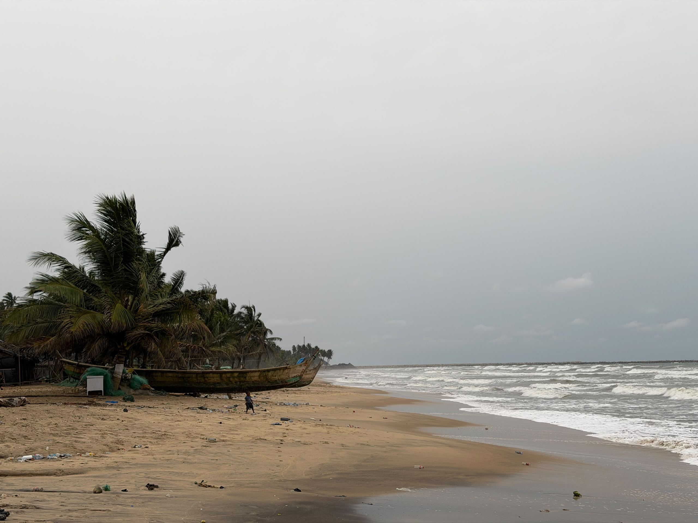

Ghana Armed Forces · Diplomacy · Nzemaland
Peter Augustine Blay
Ambassador Lieutenant General
He spent his working life moving between the training grounds and command posts of the Ghana Armed Forces, diplomatic postings abroad, and his home community in Nzemaland. This site gathers that record in one place.

- Chief of the Defence Staff
- 2009–2013
- Ambassador to Côte d’Ivoire
- 2014–2017
- Home
- Ezinlibo, Western Region
- Land donated
- 12 acres for a College of Education
The record
Seven sections
Each part of his life has its own page, with its own pictures and posts as they are added.
Origins
Ezinlibo, and the schools that shaped him.
Open page → 02Career
Command, training and administration, up to Chief of the Defence Staff.
Open page → 03Diplomacy
Peace missions, Abuja and Côte d’Ivoire.
Open page → 04Community
Schools, student support and land for education in Nzemaland.
Open page → 05Honours
Recognition at home, abroad and in Nzemaland.
Open page → 06Beyond service
Faith, family and the people around him.
Open page → 07Timeline
Ten milestones across the years, filterable by topic.
Open page →